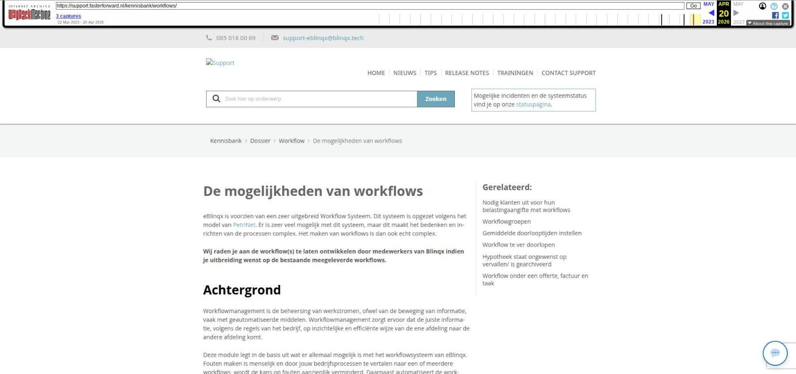

De mogelijkheden van workflows

Tekstinhoud
De mogelijkheden van workflows
eBlinqx is voorzien van een zeer uitgebreid Workflow Systeem. Dit systeem is opgezet volgens het model van PetriNet. Er is zeer veel mogelijk met dit systeem, maar dit maakt het bedenken en inrichten van de processen complex. Het maken van workflows is dan ook echt complex.
Wij raden je aan de workflow(s) te laten ontwikkelen door medewerkers van Blinqx indien je uitbreiding wenst op de bestaande meegeleverde workflows.
Achtergrond
Workflowmanagement is de beheersing van werkstromen, ofwel van de beweging van informatie, vaak met geautomatiseerde middelen. Workflowmanagement zorgt ervoor dat de juiste informatie, volgens de regels van het bedrijf, op inzichtelijke en efficiënte wijze van de ene afdeling naar de andere afdeling komt.
Deze module legt in de basis uit wat er allemaal mogelijk is met het workflowsysteem van eBlinqx. Fouten maken is menselijk en door jouw bedrijfsprocessen te vertalen naar een of meerdere workflows, wordt de kans op fouten aanzienlijk verminderd. Daarnaast automatiseert de workflowmodule een groot deel van de (rand)werkzaamheden waardoor er meer tijd overblijft voor belangrijkere zaken als declarabele werkzaamheden en contactmomenten met klanten.
Workflows in eBlinqx
Workflows kunnen gekoppeld worden aan bijvoorbeeld:
Workflow onder een offerte
Workflow onder een taak
Workflow onder een factuur
Door een workflow ergens aan te koppelen geef je aan dat het proces dient te lopen via de ingestelde workflow (en niet naar eigen inzicht). Wanneer een workflow gekoppeld is, betekent dit dat personen die daartoe gerechtigd zijn ook een nieuwe stap kunnen aanklikken. Personen die niet gemachtigd zijn krijgen de melding te zien 'Geen verdere transities mogelijk'. Deze melding kan ook verschijnen als de workflow wacht bij een automatische transitie of een transitie met een timer. Er zijn dan geen handmatige (blauwe) stappen mogelijk, waardoor de melding 'Geen verdere transities mogelijk' verschijnt.
Je kan nooit een stap terugzetten in de workflow. Heb je een verkeerde keuze gemaakt heeft de interne beheerder rechten om een workflow te verwijderen en opnieuw toe te voegen. Hier lees je daar mee over.
Om als gebruiker te zien hoe een workflow eruit ziet, is het mogelijk om op de knop 'Afbeelding' te klikken in de workflow pop-up. Daarmee wordt de workflow als afbeelding weergegeven (zie onderstaand).
Laatste update: 15 oktober 2025
Was deze informatie nuttig?
Ja Nee